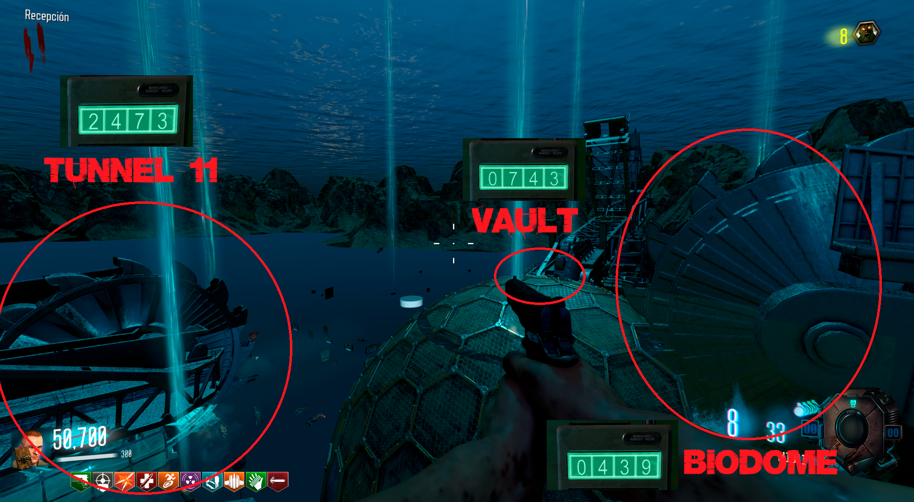
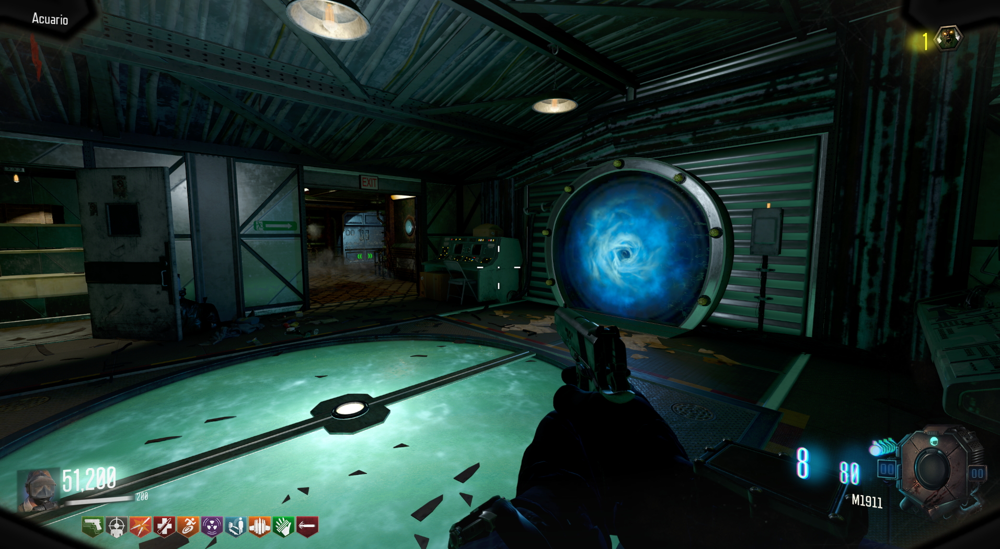
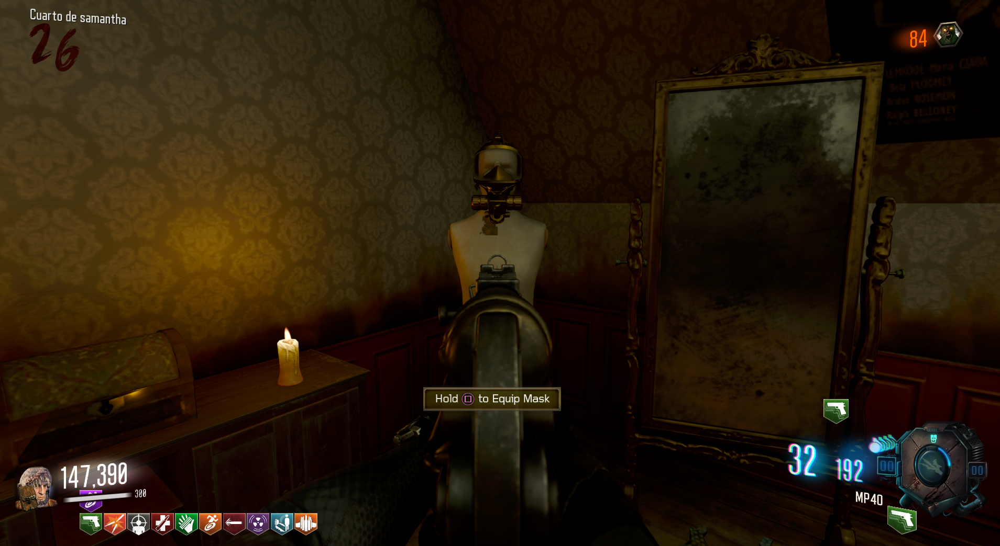

Propiedades de la máscara:
Duración de esprintar mejorada.
Capacidad de respirar bajo el agua.
Resistes 1 golpe más de zombie.
Cómo obternerlo:
Debemos de inundar todas las zona posibles de agua.
Tendremos que lanzar granadas a las ventanas de las siguientes localizaciones para que estas se llenen de agua:
También tendremos que esperar a que las tres excavadoras perforen el Túnel 11, el Almacén y el Biodomo.
Con los siguientes códigos para introducir en el PaP las excavadoras empezarán a funcionar:

Cuando escuchemos el sonido de confirmación podremos ir al portal cerca del Almacén.

En el Cuarto de Samantha encontraremos la máscara.
